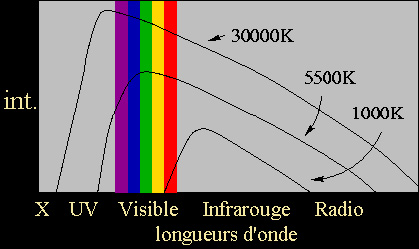

Le
corps noir
Notre but est d'ouvrir progressivement
Dotapea aux champs artistiques tels que le sky art et le land art, mais
aussi certains types d'installations et de performances.
Qu'est-ce
que le corps noir ?
Les physiciens se sont aperçus que les corps qui absorbent le plus la
lumière, comme le carbone par exemple, sont ceux qui émettent le plus
d'énergie thermique.
Il s'agit là d'une sorte de moyenne statistique. Par exemple, la lumière
d'un néon n'occupe que très peu de "raies
d'émission" et n'aura qu'un lointain rapport avec l'un des
spectres du corps noir alors que le soleil couvre un très large spectre
nettement plus comparable.
Mais même le spectre solaire se révèle différent selon qu'il est
observé à partir de l'espace ou de la terre. Ici, les éléments présents dans l'atmosphère absorbent certaines raies
d'émission. Il suffit de quelques nuages pour que cette variabilité nous
soit directement sensible !
L'emploi des "moyennes statistiques" que nous évoquions est
lié à leur utilisation la plus courante, liée à l'emploi d'éclairages
artificiels (très importants dans les domaines du cinéma et de la photo
notamment, mais aussi dans les musées, les galeries et certains ateliers
d'artistes).

En liaison directe avec ces domaines, des étalons internationaux en matière de spectres
lumineux ont été créés.
L'étalon A a une température de couleur de 2850K. Il
correspond à une banale lampe au tungstène.
L'étalon B "atteint" 4800K. Il ressemble à la
lumière du soleil.
L'étalon C, 6500K, évoque la lumière d'un ciel bleu. Son
spectre est obtenu à l'aide de filtres pigmentés au cuivre et au cobalt.
Le blanc (noté W) est une lumière théorique possédant un "spectre d'égale
énergie" : toutes les couleurs sont aussi intenses. Dans les faits, le
blanc est obtenu avec une lumière proche de l'étalon A à laquelle on applique
des filtres légers bleus et rouges.


{kind=link}